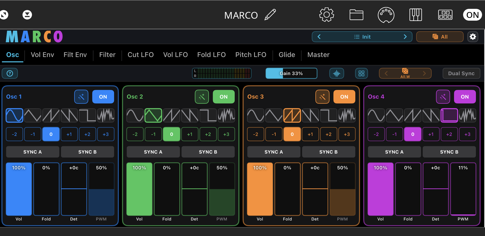
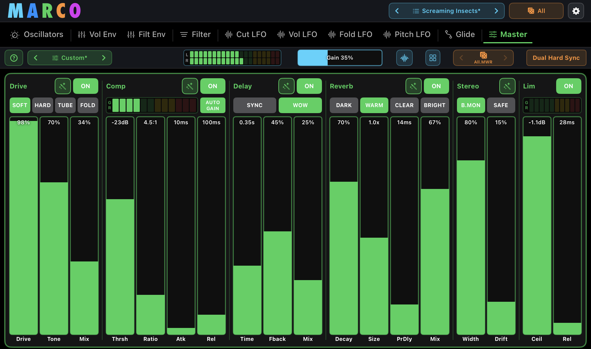

4-Oscillator Synth with Independent Shaping and Dual Hard Sync

4-Oscillator Synth with Independent Shaping and Dual Hard Sync
Four Oscillators, two hard-synced voices, one sound. Always ready to play.
Marco asks a different question. Not "what synth should we clone?" — but "what workflow becomes possible when we don't?"
The answer was the first Dual Hard Sync Synthesizer: four oscillators driving two parallel hard-sync chains instead of one. Sound that doesn't already exist — shimmering harmonics, screaming overtones, evolving timbres no other iOS synth can give you. And a workflow anyone can play. Hit the dice. Tweak it. Save it. Or dive deeper when you're ready. Whether it's your first synth or your fortieth, Marco meets you where you are.
A Dual Hard Sync button cycles through every valid sync configuration. Pair it with the Generate dice and Marco can't help but sing — territory you simply haven't heard before on iOS.
Each oscillator can join chain A, chain B, or run free. Two parallel sync arrangements where every other synth gives you one — opening up sound combinations only Marco can make.
One tap of the Dual Hard Sync button steps through every valid sync combination. Find new sonic territory in seconds.
Combine with the musical random preset generator for instantly unfamiliar, never-heard-before sounds.
Among 100+ presets, ten Signature sounds showcase exactly what Dual Hard Sync can do.
This isn't layering. This isn't "multi-oscillator" in the usual sense. Marco gives you four fully independent sound engines — each with its own complete signal path — something you won't find in hardware or software synths.



Its own waveform, filter, envelopes, LFOs, effects.
Run a saw through a notch while Osc 1 holds a sine.
Add a slow wavefold LFO without touching the others.
Detune, glide, and modulate completely on its own.

Visual feedback with per-oscillator scopes — see exactly what each engine is doing.
Random and Tweak aren't gimmicks bolted onto a synth. They're part of the writing — a workflow only digital can offer, designed to keep you moving from one idea to the next.
Most randomisers create chaos. Marco creates ideas — musical, targeted, controllable.
Go from "that's interesting" to "that's the sound" in seconds.

“The scope thing is pretty cool. The randomizer though is something to behold.”
“This is one of those apps that produces some really fantastic sounds using the random preset generator.”
Marco gives you serious sound design power without complexity getting in your way. A consistent UI across all oscillators means once you know one, you know them all.
Beginners can explore and create instantly. Advanced users can go deep without friction. No hidden layers. No menu diving. Just sound design that flows.

The white lines on each parameter slider move up and down in real time, showing exactly how an LFO is impacting that parameter — no guesswork, no hidden modulation.
Four oscillators in. One finished, release-ready sound out.
The Master tab is where every layer is glued into a single, polished sound. A full studio bus chain — drive, compression, delay, reverb, stereo width and a true-peak limiter — sits across the output, so the patch you hear is the patch you ship. No reaching for external AUv3 effects, no plugin chain to assemble: everything you need to shape, sweeten and master the sound is built right in.
Marco ships with 20 Master presets out of the box — ready-made mastering chains for a range of styles — and you can save your own to reuse across any patch.

Soft, hard, tube or wavefold saturation with tone and mix — warmth, grit or full aggression.
Threshold, ratio, attack and release with auto-gain — tighten the dynamics and add punch.
Tempo-syncable echo with feedback, wow and mix — depth, space and movement.
Dark, warm, clear or bright spaces with decay, size and pre-delay control.
Width and drift with a bass-mono safe mode — widen the image without losing the low end.
Ceiling and release — a transparent brickwall to finish at a full, consistent level.
The standalone iPad, iPhone and Mac apps include a built-in music player featuring public domain tracks — designed for quick experimentation and sound auditioning. MIDI input is also supported, so you can drive Marco from any controller or sequencer.
Load a preset, hit play, and hear how it sits in real music — without setting up a Host.
Great for kids and parties too — hear Happy Birthday, Twinkle Twinkle or Für Elise reimagined through evolving synth sounds at the tap of a button.

Whether you're sketching ideas or building a finished track, Marco ships with the tools you need.
Including 10 Signature sounds built around Dual Hard Sync. Import / export supported.
High-quality effects per oscillator. Delay is clock-synced to your host.
Every LFO — Cut, Vol, Fold and Pitch — locks to host tempo for tight, in-time modulation.
Full Note + CC mapping, plus dedicated MIDI for Generate, Tweak, Dual Hard Sync, and opening Scope, Preset Browser, XY Pad and the Random Generator.
Play immediately on iPad standalone — no controller required.
Instant inspiration with public-domain tracks (standalone).
Drop into AUM, Loopy Pro, Drambo, Logic, GarageBand, Cubasis and more.
Marco starts with the workflow. The sound follows.
Dual Hard Sync. Full per-oscillator control. A random generator that produces ideas, not noise. A tweak system that's part of the writing, not a starting point. Workflow designed for digital — and sound nobody else can give you.
Create sounds no one else can.
Available on the Apple App Store for iPhone, iPad, and Mac.
Download on the App Store